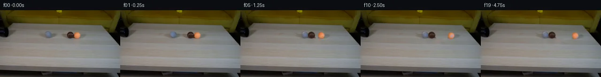

![首帧]()

Round 00
2026-11-04T22:09:30.341198+00:00像素候选变化代码 +367/−0inspection 更新
pixels 52840edd58715fc9 · code c5aa530f063dca27
查看本轮 generate.py 真实 diff
--- previous/generate.py +++ current/generate.py @@ -0,0 +1,367 @@ +"""Deterministic local pixel continuation of the supplied tabletop photograph. + +Only first_frame.png and prompt.txt provide scene content. No renderer, learned +model, external assets, or external physics engine is used. +""" +from pathlib import Path +import csv +import json + +import numpy as np +from PIL import Image, ImageDraw +from scipy.ndimage import distance_transform_edt, gaussian_filter, map_coordinates + +from artifact_io import save + + +ROOT = Path(__file__).resolve().parent +FPS = 4 +NFRAMES = 20 +H, W = 144, 256 +SUPERSAMPLE = 4 +YY, XX = np.mgrid[:H, :W].astype(float) + +BALLS = [ + dict(name="grey", x=103.0, y=52.5, rx=7.30, ry=7.15, radius=7.00), + dict(name="brown", x=149.9, y=53.3, rx=7.55, ry=7.25, radius=7.15), + dict(name="orange", x=163.9, y=54.0, rx=6.90, ry=7.15, radius=6.80), +] + + +def smoothstep(a): + a = np.clip(a, 0.0, 1.0) + return a * a * (3.0 - 2.0 * a) + + +def ellipse(cx, cy, rx, ry, feather=0.18): + d = np.sqrt(((XX - cx) / rx) ** 2 + ((YY - cy) / ry) ** 2) + return smoothstep((1.0 + feather - d) / (2.0 * feather)) + + +def clean_table(src): + """Rebuild small hidden areas using same-row wood pixels and local grain. + + The diffuse shadows have much wider support than the silhouettes. A soft + union mask removes both. All pixels outside that union are unchanged. + """ + removal_grey = np.maximum( + ellipse(103.0, 52.3, 10.0, 9.0, 0.10), + ellipse(103.0, 54.6, 21.7, 5.7, 0.12), + ) + removal_targets = np.maximum( + ellipse(156.6, 53.8, 18.3, 10.1, 0.08), + ellipse(157.4, 55.3, 29.0, 8.0, 0.13), + ) + removal = np.maximum(removal_grey, removal_targets) + estimate = src.copy() + for left, right, donor_left, donor_right in [ + (78, 128, (75, 81), (125, 131)), + (123, 194, (122, 129), (189, 196)), + ]: + # A separate donor strip supplies actual photographic wood grain. + # Its low-frequency trend is removed before adding the fine grain. + low = np.mean(src[:, donor_left[0]:donor_left[1]], axis=1) + high = np.mean(src[:, donor_right[0]:donor_right[1]], axis=1) + u = np.linspace(0, 1, right - left) + strip = low[:, None, :] * (1-u)[None, :, None] + high[:, None, :] * u[None, :, None] + donor = src[:, 27:27 + right-left] + grain = donor - gaussian_filter(donor, sigma=(0, 3.0, 0)) + strip += grain * 0.45 + if left == 78: + estimate[:, left:right] = strip + else: + # The target estimate is used only within its own removal region. + m = removal_targets[:, left:right, None] + estimate[:, left:right] = m * strip + (1-m) * estimate[:, left:right] + plate = src * (1-removal[:, :, None]) + estimate * removal[:, :, None] + return plate, removal_grey, removal_targets + + +def body_alpha(ball, x, y): + d = np.sqrt(((x-ball['x'])/ball['rx'])**2 + ((y-ball['y'])/ball['ry'])**2) + # Source objects already have a soft photographic contour. This width + # supplies a matte for that contour rather than a hard cutout edge. + return smoothstep((1.055-d)/0.125) + + +def normal_basis(nx, ny, nz): … diff truncated; 280 more lines …